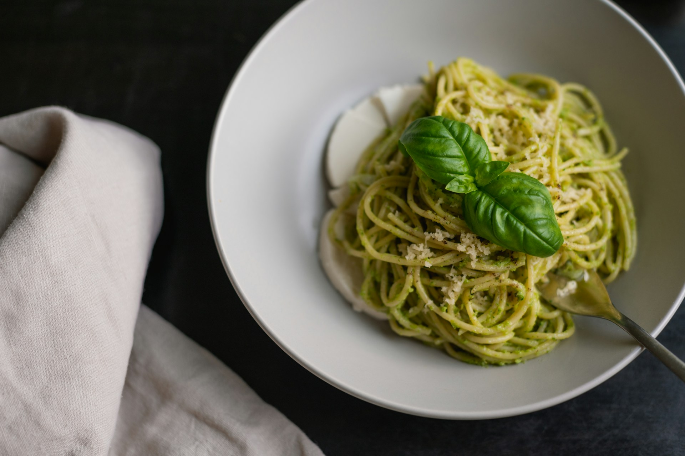

Pasta with pesto

Description
By following this simple recipe, you will be able to make a dish of pasta with pesto.
Ingredients
- A pack of pasta (trenette or linguine is better)
- 50/100g of fresh basil
- A pinch of coarse salt
- 2 cloves of garlic
- 20g of pine nuts
- Some extravirgin olive oil
- 40g of grated Parmiggiano Reggiano cheese
- 40g of grated pecorino cheese
Steps
- First, let's make the pesto sauce. Wash and dry the basil.
- Peel and chop the garlic. After that, place the garlic inside a traditional mortar and grind. Then, place the basil leaves with a pinch of coarse salt and continue grinding.
- Crush the basil against the walls of the mortar by rolling the pestle in a rotary motion and rotating the mortar in the opposite direction.
- After the basil starts to form a green liquid like a uniform cream, add the pine nuts and the grated cheese and continue moving the pestle in order to make a creamier sauce.
- Finally, gradually add the extra virgin olive oil, repeating the same movement until you reach the desired consistency. Usually pesto should appear as a thick, light green cream.
- Start preparing the pasta according to the package instruction until al dente. When the pasta is ready, you can keep a little amount of pasta cooking water to pour in the pesto in order to change its consistency (it should not be too liquid!).
- Mix the pasta with the pesto sauce in pan (it's best to use the same pan that you used to cook the pasta).
- Now, you can serve your pasta with pesto, according to the desidered portions. Here's a tip: you can add a leaf of basil on top to have a delicious look!